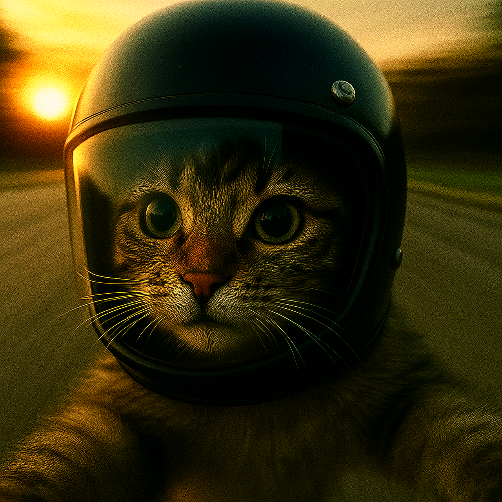
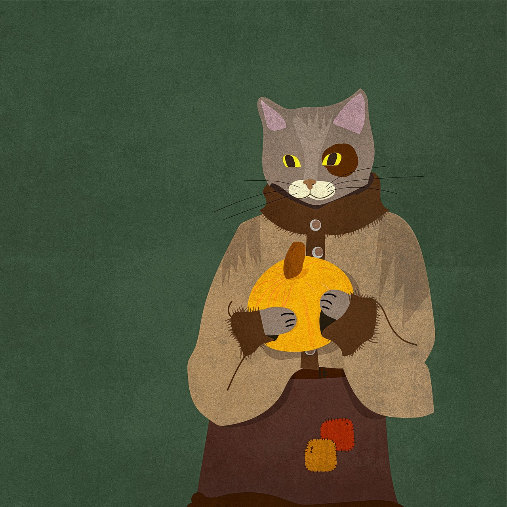
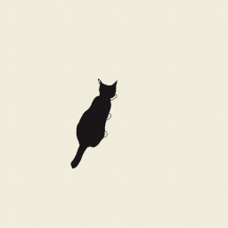

Cats are elegant and independent domestic pets, prized for their captivating grace and unique blend of affection and solitude. These small, furry felines have keen senses like sharp vision and sensitive hearing, along with soft paws that allow for stealthy movement. While known for their playful antics and comforting purrs, they are also natural hunters and require careful attention and patience from their owners to thrive.